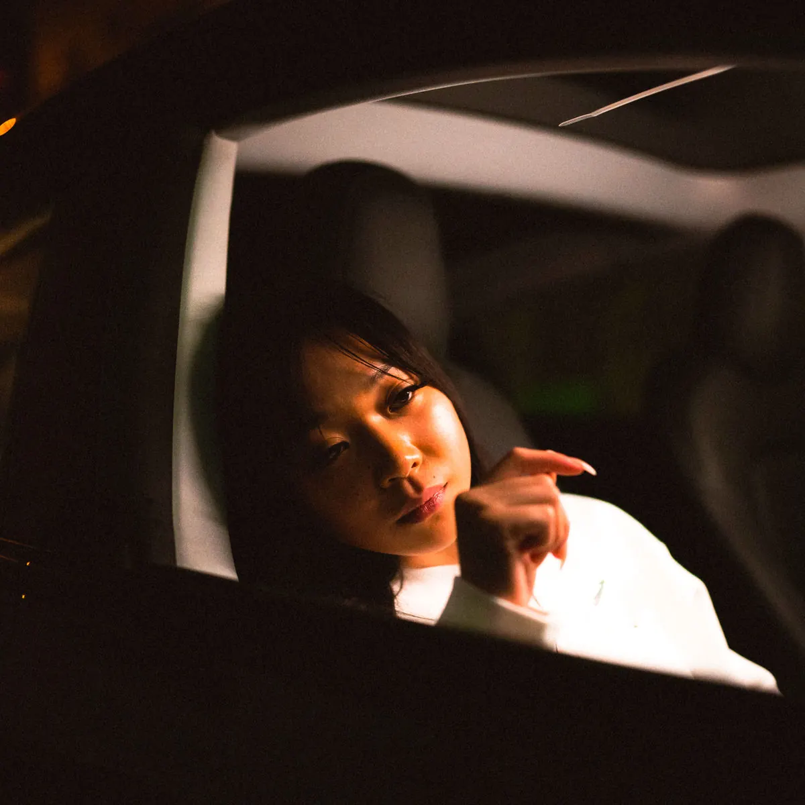

Publié le 5 novembre 2026

Mademoiselle Lou publiera son premier album studio Mésaventures le 20 novembre 2026. La tracklist réunit 15 titres, dont une seconde collaboration avec le rappeur Booba.
Que contient la tracklist du premier album Mésaventures ?
Le premier album de Mademoiselle Lou rassemble 15 morceaux originaux. La boutique officielle de l'artiste détaille un ordre de piste qui s'ouvre sur le titre Pdg et se poursuit avec Carroussel, Anonyme puis Empoisonner. En cinquième position figure le morceau Conséquences en duo avec Booba, déjà diffusé comme single au printemps dernier.
Ce projet fait suite à plusieurs EP autoproduits et signés en label, dont Précieux en 2023 puis Vivre et Les Ombres en 2024. L'album concrétise trois ans d'expérimentations vocales entre chant r'n'b et lignes mélodiques inspirées de la trap.
Pour suivre d'autres artistes en pleine émergence, vous pouvez lire notre sélection des rappeurs à suivre actualisée chaque mois.
Comment s'est construite la collaboration avec Booba ?
La relation artistique entre Mademoiselle Lou et Booba commence en 2023 avec la sortie du morceau Zénith. Le rappeur avait remarqué la chanteuse sur les réseaux sociaux avant de valider son travail. Ce premier titre cumule plus de 3,8 millions d'écoutes sur YouTube Music.
Les deux artistes ont renouvelé leur alliance sur le single Conséquences, publié en avril 2026 chez Elektra France. La chanson mêle les harmonies douces de la chanteuse au style percutant du patron du 92i. Ce choix d'intégrer le morceau sur le disque donne une assise solide à l'album avant même sa parution.
Sur les réseaux sociaux, Mademoiselle Lou aborde ce projet comme le récit d'un parcours personnel. Elle y évoque une recherche d'identité et de sens à travers ses textes.
Quel virage musical représente cet album pour l'artiste ?
Le passage au format long exige une tenue globale souvent difficile pour les artistes habitués aux formats courts. Mademoiselle Lou a construit son style sur un timbre feutré et des refrains accrocheurs. L'enjeu de Mésaventures sera de maintenir cette cohérence narrative sans essouffler l'auditeur sur 15 pistes.
Certains auditeurs reprochent parfois une certaine répétition dans ses structures d'écriture. L'album devra prouver qu'elle sait diversifier ses thèmes et sortir des schémas mélodiques habituels. Si les morceaux récents montrent une vraie maturité technique, la production devra apporter du relief à l'ensemble.
Les morceaux seront disponibles sur toutes les plateformes de streaming dès le 20 novembre 2026. Pour consulter les prochaines dates de la scène française, retrouvez l'agenda des concerts rap sur notre site.
Un tableau récapitulatif résume les principales données relatives au projet :
| Élément | Détail |
|---|---|
| Titre du projet | Mésaventures |
| Date de sortie | 20 novembre 2026 |
| Nombre de pistes | 15 titres |
| Invité principal | Booba (sur le titre Conséquences) |
| Format | Album studio (CD et streaming) |